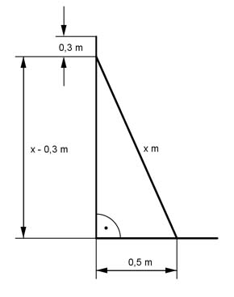

Pythagoras Aufgabe 28 Ein senkrecht an einer Wand stehender Stab rutscht 30 cm herunter. Dabei entfernt sich sein Fußpunkt einen halben Meter von der Wand. Wie lang ist der Stab in m?  x² = (x - 0,3)² + 0,5² x² = x² - 0,6x + 0,09 + 0,25 |-x² 0 = - 0,6x + 0,34 |+0,6x 0,6x = 0,34 |:0,6 x = 0,57 m